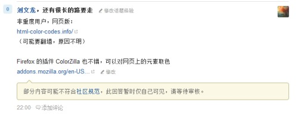
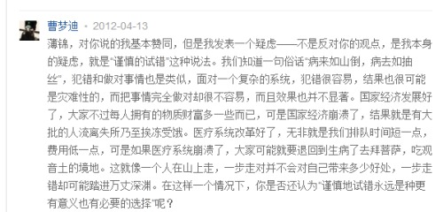
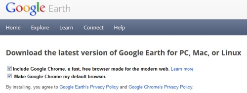
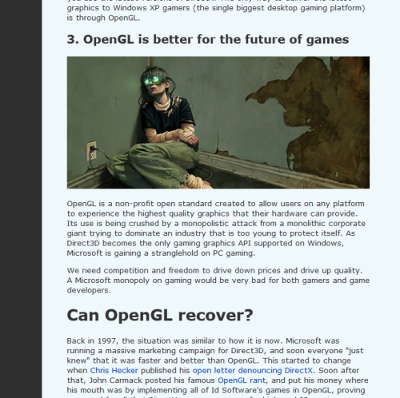

一行代码实现矩阵转置，python你是要有多牛逼。。。
转一篇文章，还没看完，不过开头这几个词已经预感不会差了：
欲望、外界、标签、天才、时间、人生目标、现实、后悔、和经历
http://blog.sina.com.cn/s/blog_6e8e05ac0100wu4h.html
现在不缺谁谁谁来指点走出迷茫，因为暂时并不迷茫
但难保未来（很可能近期的未来，比如生活环境突变的毕业这事儿） 不迷茫，，之前一条blog说近期的目标里一条“形成反社会、反人类的世界观”，这是戏谑，，我想表达的意思是，别被主流意识形态绑架（相信我，“主流意识形态”没你想得那么是愤青的对立面，所以很可能你已经在一步步滑下去），找个靠谱的支点
想到的其中一个元素是无欲则刚——哦，不是真无欲，是无世俗里的那么些欲，因为它们挺无趣的，而且那么费劲啊（哪怕有趣也性价比忒低了）
苏椰的那个经历挺触动，，以此为例，我想搞明白那些
18:52
每一个二十岁左右的年轻人都像一台高速运行的电脑。一代比一代运转地更快。我们从懂事开始就有别人告诉我们要运行各种程序，上幼儿园，上小学，上初中，上高中，上大学，工作，等等等。我们停不下来。关键是，我们很难运行自己想要运行的程序，因为过去二十年里面我们运行的所有程序都是别人编好以给我们的--我们自己不会编程序。
如果有一天，有一台电脑突然下了决心，要运行自己的程序，他就必须先停下来。这时，他会看着周围所有的电脑依然在高速运行着，甚至嘲笑他怎么不动了，然后把他远远地甩在后面。而他，需要慢慢地开始学习自己编程，这个过程很漫长，很痛苦，因为从来没有人教过他。这就是为什么世界上只有少数人在运行自己的程序。
这段快看哭了
18:58
因为所有一直在追求“出色”和“卓越”的人最后都在他们最坚信的标准上“输”给了那些只是想过自己独特生活的人。
19:05
“Denny，你知道，作为你的上司，这次我面对着一个选择，是照顾公司的利益还是你一个年轻人的利益。我选择了后者。我希望你以后不用面临这样的选择。但如果你有一天遇上了，我希望你可以跟我做一样的决定。”
我们希望你们可以爱一个人，不是因为高尚，而是因为。。。好吧，因为必要的时候你也可以杀一个人，你会掐死一只蚊子而不会拍死一只飞萤，。。。。因为，这只是你个人的一种趋向
19:22
回看知乎的回答，唔。。。多年以后，或多久以后，你也会抛弃知乎，像你曾抛弃过那么多东西一样地抛弃它，，也就届时感恩一下，是为成长
http://inventwithpython.com/pygame/chapters/
Making Games with Python and PyGame
好可爱。。（ok, geeky...）
http://www.lixiaolai.com/archives/488.html

TT
每次看到“技多不压身”的说法就想点反对
It is impossible for a man to learn what he thinks he already knows.
-Epictetus
http://betterexplained.com/articles/why-do-we-need-limits-and-infinitesimals/
Suppose an imaginary number (i) visits the real number line. Everyone thinks he’s zero: after all, Re(i) = 0. But i does a trick! “Square me!” he says, and they do: “i * i = -1″ and the other numbers are astonished.
翻译：
虚数 i 跑到实数轴玩。所有人都觉得他是0：毕竟，i的实部就是0。但i变了个戏法！“把我平方！”他说，他们照做了：“i * i = -1”然后所有人都受精了
很有爱，恩。。
以计算机科学为动力去学数学恐怕没戏——只能去啃啃离散，至多到线代里的那些矩阵
想学数学还是去看费曼吧，什么微分积分偏来偏去的，场论、量子力学，哇
http://www.zhihu.com/question/20172146/answer/14214594
此答案醍醐灌顶，忽然明白自己对极权与民主之间的困惑在哪了
update 0:26
评论里的讨论太精彩，勿错过

前段时间某次个人对知乎评价甚高，一段时间下来渐渐又疲软了，但这次又不能不再次高呼“赞”字
知乎是个平台，聚集了不少（对于目前层次的我来说）非常靠谱的人士，耐心发掘，这是一个宝贵的资源
（个人摸索有局限性——知乎聚集起来的这种资源是开拓眼界的非常好的手段）
http://www.zhihu.com/question/19600354/answer/12823696
到处碰到拿《失控》说事儿的。。。你说我到底要不要带着批判的眼光给完整看上一遍？

关于昨天说google强制捆绑chrome——见上图，言重了
不过一直以来下意识里觉得这种行为是百度、360之类的作为
感觉被关在一个笼子里
关键词：墙、脑关、现世，
有生之年甚至看不到人类进入另一个恒星系
装google earth被强制捆绑了chrome，还直接篡改默认浏览器，，google都令人如此失望
不如意之事要找是无穷无尽的，
地月光延迟1.26秒，星际网络会慢到几bps的程度，，
哈勃朝深空望去，看到的是星云、孵化场、太阳、造父变星，像拍摄人间一瞬间的照片，老人、孩子、残缺的、健康的
除了步入自己创建的一个cyber空间，我想不到有别的逃离的办法了
恩。。。和evo
OMG
http://wanghaosen.diandian.com/post/2012-08-08/40032824657
仅以鲁迅这篇文章献于刘翔。
Schopenhauer说过这样的话：要估定人的伟大，则精神上的大和体格上的大，那法则完全相反。后者距离愈远即愈小，前者却见得愈大。
正因为近则愈小，而且愈看见缺点和创伤，所以他就和我们一样，不是神道，不是妖怪，不是异兽。他仍然是人，不过如此。但也惟其如此，所以他是伟大的人。
战士战死了的时候，苍蝇们所首先发见的是他的缺点和伤痕，嘬着，营营地叫着，以为得意，以为比死了的战士更英雄。但是战士已经战死了，不再来挥去他们。于是乎苍蝇们即更其营营地叫，自以为倒是不朽的声音，因为它们的完全，远在战士之上。
的确的，谁也没有发见过苍蝇们的缺点和创伤。
然而，有缺点的战士终竟是战士，完美的苍蝇也终竟不过是苍蝇。
去罢，苍蝇们！虽然生着翅子，还能营营，总不会超过战士的。你们这些虫豸们！
三月二十一日。
http://www.flownet.com/gat/jpl-lisp.html
i just don't know where to put it...
disco有时候还挺好听的
上知乎可以让人直观地感觉到自己还差得很远——因为，那么多问题你都答不来啊~~~
早以前就对这种用法很不爽，最近看奥运会尤其毷氉
“最”一直以来在俺这就跟top1对应的，“刘翔是中国最伟大的田径选手...”，完了你来一“之一”，我操。。。。到底是“最伟大”还是“伟大之一”啊？“最伟大之一”算怎么回事啊？
不过静下心来好好考察下这一说法：
首先，“这几棵树是森林里最高的”——没问题，A、B、C这仨树是这片林子里的top3，，然后，“这棵树是森林里最高的之一”——所以这棵树取自{A, B, C}这集合，就是top n的意思了
自然语言不要求科学那样的精确性，只要意思传达到就行，无所谓对错
但最好还是要吐槽下这个表达结构（源于语言的线性接收），你看人鸟语里的“one of the most...”就平滑得多 （所谓least surprise，知乎哪次还见到个说德语否定句的否定词是放最后的，NM）
好吧，静下心来，做数学
暑假过去一半，网页网站那乱七八糟的一滩也马马虎虎完成了一半，
明早开始PHP
这家伙生活
@twiispa
http://www.zhihu.com/question/20383739
许久以来隐约到狼王身上有些东西想吐槽，但又说不出究竟是什么
知乎这条问答感觉对上了些影子，尤其是陈浩的答案
当然，“科学的世界观”并非模范，也只是一种取舍而已，，此处只作抛砖
Why you should use OpenGL and not DirectX
技术细节不论，贴这篇主要是其中展现的垄断公司的商业阴谋
PS：原地址的页面风格实在看着难受，用firebug临时调下css，效果如下~~

don't be enslaved by the stupid majority
有人发表下看法？
点点这是要闹哪样。。。
忽然意识到HTML、CSS中内容与呈现分离的思想有一个前提：抽象
计算机模拟也是基于抽象（否则计算量太大）
选择了抽象，我们就可以也应该利用它带来的便利，比如CSS中
h1 {
color: purple;
}
这样的动作
如果不是内容与呈现分离，一个html中40个h1要改动颜色就得在每一条里这么做
我想到的是面向对象语言中类的定义：如果我们要定义一个h1类，color这条属性应该static（c++）还是this（javascript）呢？——呵呵，不同领域下不同的思维方式
但我想，如果我们的模拟世界中原材料深入到基本粒子，那么改变40条h1颜色的动作也只需要类似
particle.spectrum = purple;
这样的语句，然后一路向上所有由基本粒子构建的物体都会做出相应改变——更强大，purple作为加权元素的物体会做出相应的部分变化。这就是自底向上的能量（相对于OO中自顶向下的抽象的思想）
Daubdles提到好音乐，再次推荐《李献计历险记》（动画）
别人沉入苦难的时候，别人自杀的时候，你永远不能说你就安然看他们是没有逃出，哪怕你脑补出一个可以诉及的观点，那也是特定情境下以特定文化背景的姿态反应，，
我是说，人活于世总就是寻求个自洽，途径和手段和目的地各不相同，骨子里却是一样的——这一样的意思是说，你某时的自洽和别人的不自洽不代表将来你就不会像别人那样不自洽，，事儿上一样的时候，还能相互扶持，但时间错位了，也只能说抱歉，这是毫无办法的事情，，
总的来说，人有适应机制，不会长久地坠在一个跟自己打结的状态下出不来（除非某时扛不住了自杀，而这我觉得是我们尚不至于达到的地步），所以甚至解决办法都不必想，时间就是解决办法——但之所以我们总要扭自己打起结来，是不想自己在一次次的消极解决（靠时间）后磨损榨平成干巴巴的一物件，，
就像说宇宙的终点是热寂，但我们低熵体们还是孜孜不倦地折腾能量，哪怕这正是加速毁灭的行为，
因为我们秉承：给岁月以文明，而不是给文明以岁月
歪了，且住
后补：回想高中那段是怎么走出来的呢？（原谅我老拿陈年烂谷子说事，因为我拿不出别的了）——答案是根本没走出来，是跑了大学，曾经造就苦难的客观环境不再成立了，，答案是教训也好、变形也好，形成把“自己”这一东西压低为草芥的一种活着的态度了，再有幸运地找到一些可以投身于的事物，，这里潜在的，如果将来破灭，再次面对一层薄的沙土掩埋起的深层矛盾，就又会纠结，，又或者幸运，追寻在平缓的演变中一个接上另一个，你就可以说这一辈子起码自己将有限的时间投注在了相对值得的事情们上面，就不至于悔恨了吧
2012.7.13 pm1:16
2012.7.14 am10:52
2012.7.14 pm3:05
2012.7.16 pm2:07
2012.7.24 am10:57
pm6:18
从街上回来，走路上抬头看到星星，
再走，看到北斗七星，，在天上横亘了好大一块，明暗不同的星光——它们有多远？想象自己是个原始人时看到天上那些发光物的感受，
大啊，宇宙
妈叫我，她没带钥匙
http://www.zhihu.com/question/19747220
什么叫过度诠释？二楼完美解答 （为防楼层变动，说明是“俄罗斯方块”那个）
http://jandan.net/2011/02/12/wikihistory.html
（from http://www.zhihu.com/question/20320956）
有趣
http://www.zhihu.com/question/20264994
是的，绝对有亮点——工科男就是玩自己~~